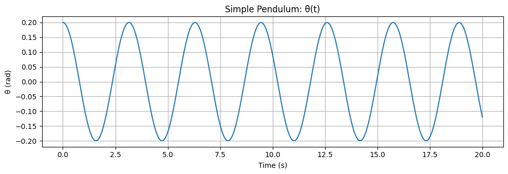
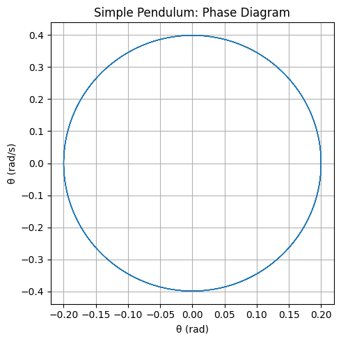
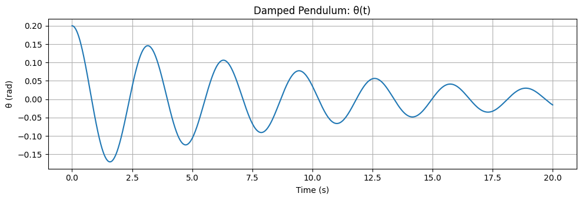
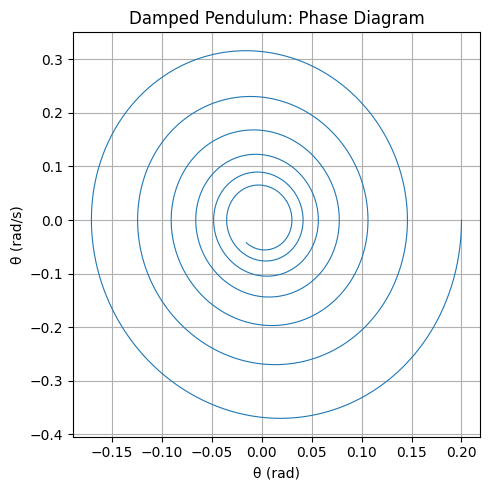
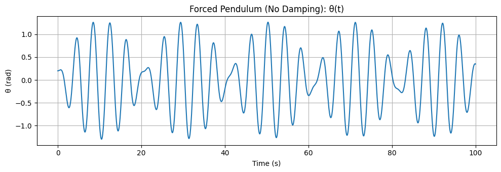
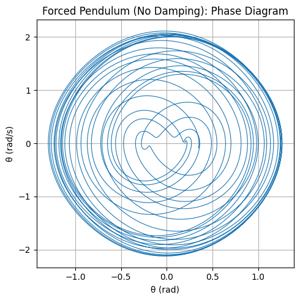
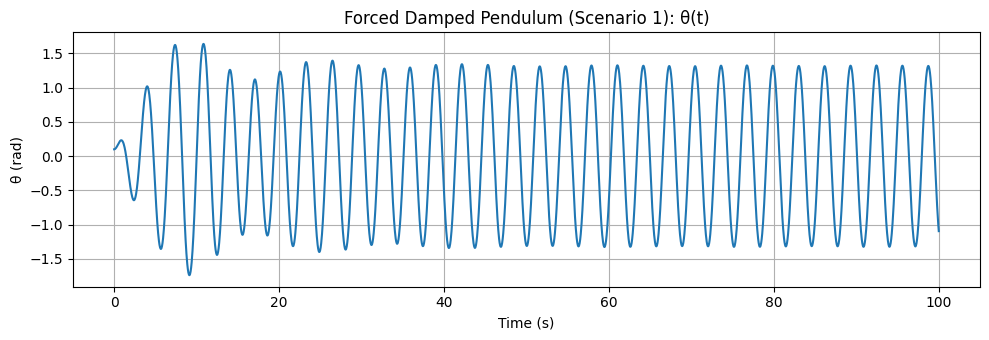
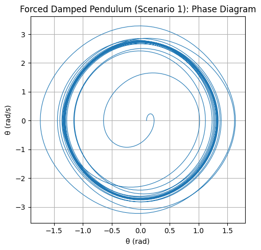
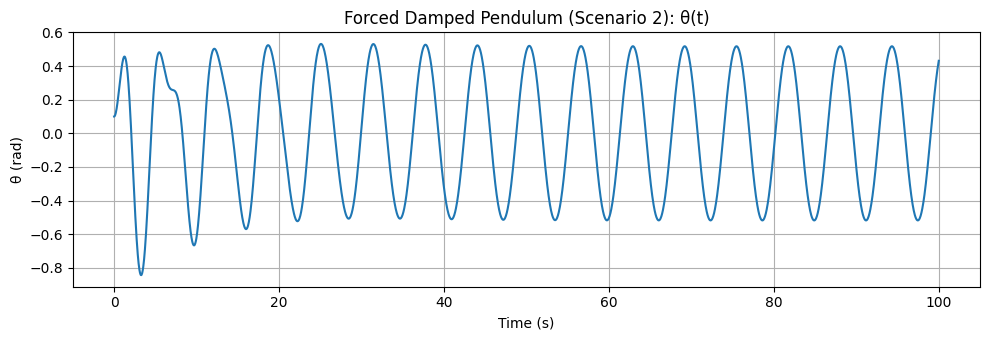

🎢 Investigating the Dynamics of a Forced Damped Pendulum
🎯 Motivation
The forced damped pendulum is not just another mechanical system—
it's a gateway into the world of complex, nonlinear dynamics.
When damping and a periodic driving force are both present, something magical happens:
a simple swing turns into a playground of resonance, chaos, and quasiperiodicity.
This makes the system a powerful analogy for real-world phenomena like:
- Climate cycles 🌍
- Vibrating bridges 🌉
- Electrical circuits ⚡
So why study this? Because understanding how a simple pendulum behaves under stress tells us how complex systems thrive—or fail—in the face of repeated forces.
🧠 1. Theoretical Foundation
Let’s start from the fundamental equation that governs the motion:
Where:
- \(\theta(t)\): Angular displacement
- \(\gamma\): Damping coefficient
- \(\omega_0\): Natural frequency
- \(A\): Driving force amplitude
- \(\omega\): Driving frequency
✏️ Small-Angle Approximation
When the angle is small \((\theta \ll 1)\), we simplify:
Which gives:
This version is linear and lets us dig into analytical solutions.
🔍 General Solution
The full solution is the sum of:
- Homogeneous (transient) part
- Particular (steady-state) part
Transient part:
Where:
Steady-state part:
Amplitude and phase shift are:
📈 Resonance: The Sweet Spot of Energy
Resonance happens when the system absorbs maximum energy from the driving force:
Here, even small forces can cause large-amplitude oscillations.
This is where beauty meets danger in mechanical systems!
🌀 2. Analysis of Dynamics
🎛️ Parameter Effects
Let’s see how changing different parameters affects motion:
- Damping (\(\gamma\)):
- High → suppresses motion
-
Low → enables oscillation and even chaos
-
Driving amplitude (\(A\)):
- Low → simple periodic motion
-
High → system may go chaotic
-
Driving frequency (\(\omega\)):
- Near \(\omega_0\) → resonance!
- Far → low amplitude
⚠️ From Order to Chaos
As you tweak \(A\) or \(\omega\), the system transitions like this:
- Simple periodic motion
- Quasiperiodic motion
- Period-doubling
- Chaos 🚨
Visualize this with: - Phase space plots \((\theta \text{ vs } \dot{\theta})\) - Poincaré sections: snapshot once per cycle - Bifurcation diagrams: to see chaos emerge!
⚙️ 3. Real-World Applications
This isn't just theory—it shows up in real life:
-
🧲 Energy Harvesting:
Tiny vibrations → electricity (like in wearables or smart bridges) -
🌉 Suspension Bridges:
Unchecked resonance can cause catastrophic failure
(hello, Tacoma Narrows Bridge...) -
⚡ Oscillating Circuits:
The pendulum’s math is mirrored in RLC circuits with AC driving.
🚀 Wrap-Up
The forced damped pendulum is more than a swinging weight—
it's a model for complexity, transition, and control.
Whether you're an engineer, physicist, or just someone who likes watching the world wiggle into chaos—this system's got something for you.
🔧 4. Implementation: Computational Model
🛠️ Common Setup (Run This First)
import numpy as np
import matplotlib.pyplot as plt
from scipy.integrate import solve_ivp
# Pendulum equation
def pendulum_eq(t, y, gamma, omega0, A, omega_drive):
theta, theta_dot = y
dtheta_dt = theta_dot
dtheta_dot_dt = -gamma * theta_dot - omega0**2 * np.sin(theta) + A * np.cos(omega_drive * t)
return [dtheta_dt, dtheta_dot_dt]
# Plotting functions
def plot_time_series(sol, title):
plt.figure(figsize=(10, 3.5))
plt.plot(sol.t, sol.y[0])
plt.xlabel('Time (s)')
plt.ylabel('θ (rad)')
plt.title(title)
plt.grid(True)
plt.tight_layout()
plt.show()
def plot_phase_diagram(sol, title):
plt.figure(figsize=(5, 5))
plt.plot(sol.y[0], sol.y[1], lw=0.8)
plt.xlabel('θ (rad)')
plt.ylabel('θ̇ (rad/s)')
plt.title(title)
plt.grid(True)
plt.tight_layout()
plt.show()
1️⃣ Simple Pendulum
# Parameters
gamma = 0.0
A = 0.0
omega0 = 2.0
omega_drive = 0.0 # Not used since A = 0
# Initial conditions and simulation
y0 = [0.2, 0.0]
t_eval = np.linspace(0, 20, 1000)
sol = solve_ivp(pendulum_eq, (0, 20), y0, t_eval=t_eval, args=(gamma, omega0, A, omega_drive))
# Plots
plot_time_series(sol, "Simple Pendulum: θ(t)")
plot_phase_diagram(sol, "Simple Pendulum: Phase Diagram")


θ(t) Plot:
The pendulum oscillates in a regular, periodic motion without any energy loss. This is the ideal, undamped case.
Phase Diagram:
Closed elliptical loops indicate conserved energy and perfect periodic behavior.
2️⃣ Damped Pendulum
gamma = 0.2
A = 0.0
omega0 = 2.0
omega_drive = 0.0
y0 = [0.2, 0.0]
t_eval = np.linspace(0, 20, 1000)
sol = solve_ivp(pendulum_eq, (0, 20), y0, t_eval=t_eval, args=(gamma, omega0, A, omega_drive))
plot_time_series(sol, "Damped Pendulum: θ(t)")
plot_phase_diagram(sol, "Damped Pendulum: Phase Diagram")


θ(t) Plot:
The oscillations decay over time as energy is gradually lost due to damping. The system approaches equilibrium.
Phase Diagram:
A spiral trajectory converging to the origin, showing the loss of kinetic and potential energy.
3️⃣ Forced Pendulum (No Damping)
gamma = 0.0
A = 1.0
omega0 = 2.0
omega_drive = 1.5
y0 = [0.2, 0.0]
t_eval = np.linspace(0, 100, 3000)
sol = solve_ivp(pendulum_eq, (0, 100), y0, t_eval=t_eval, args=(gamma, omega0, A, omega_drive))
plot_time_series(sol, "Forced Pendulum (No Damping): θ(t)")
plot_phase_diagram(sol, "Forced Pendulum (No Damping): Phase Diagram")


θ(t) Plot:
Continuous external forcing causes sustained oscillations. The amplitude can vary depending on resonance.
Phase Diagram:
Complex loops reflect the interplay between the natural frequency and driving force — no energy is lost.
4️⃣ Forced Damped Pendulum – Scenario 1 (Moderate Forcing)
gamma = 0.2
A = 1.2
omega0 = 2.0
omega_drive = 2.0
y0 = [0.1, 0.0]
t_eval = np.linspace(0, 100, 3000)
sol = solve_ivp(pendulum_eq, (0, 100), y0, t_eval=t_eval, args=(gamma, omega0, A, omega_drive))
plot_time_series(sol, "Forced Damped Pendulum (Scenario 1): θ(t)")
plot_phase_diagram(sol, "Forced Damped Pendulum (Scenario 1): Phase Diagram")


θ(t) Plot:
The system reaches a steady oscillatory state after initial transients. Oscillations are periodic but limited by damping.
Phase Diagram:
A stable closed loop (limit cycle), indicating periodic motion with energy input balancing damping.
5️⃣ Forced Damped Pendulum – Scenario 2 (Stronger Forcing)
gamma = 0.2
A = 1.5
omega0 = 2.0
omega_drive = 1.0
y0 = [0.1, 0.0]
t_eval = np.linspace(0, 100, 3000)
sol = solve_ivp(pendulum_eq, (0, 100), y0, t_eval=t_eval, args=(gamma, omega0, A, omega_drive))
plot_time_series(sol, "Forced Damped Pendulum (Scenario 2): θ(t)")
plot_phase_diagram(sol, "Forced Damped Pendulum (Scenario 2): Phase Diagram")


θ(t) Plot:
The system shows irregular or chaotic behavior due to stronger forcing or off-resonance driving.
Phase Diagram:
The scattered points or tangled trajectories suggest sensitive dependence on initial conditions — a sign of chaos.
🎯 Conclusion
The forced damped pendulum serves as a powerful model for understanding the rich and complex behavior of nonlinear dynamical systems. Through theoretical analysis and computational simulations, we have demonstrated how variations in damping, driving amplitude, and frequency can lead to a wide range of phenomena — from regular oscillations to chaotic motion.
Our exploration highlights the sensitivity of the system to initial conditions and parameter changes, illustrating concepts like resonance and the transition to chaos. Tools such as phase diagrams and Poincaré sections proved essential in visualizing and interpreting these dynamics.
Beyond its theoretical importance, the forced damped pendulum has practical relevance in engineering, physics, and even biological systems. This study reinforces the value of combining analytical insights with computational tools to explore and understand the nonlinear world.